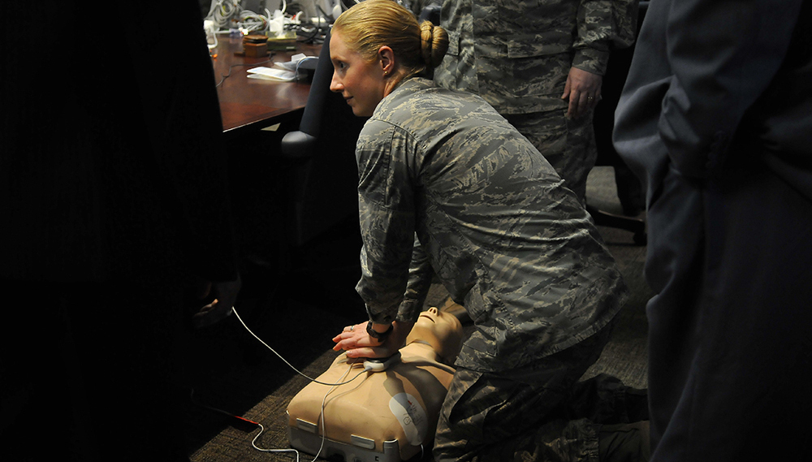
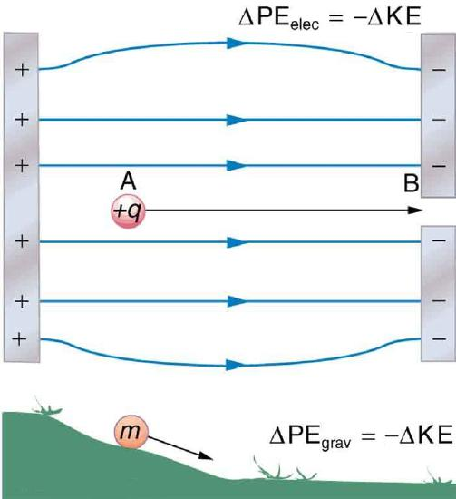
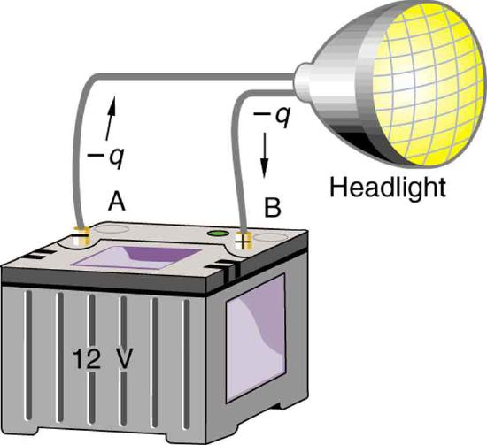
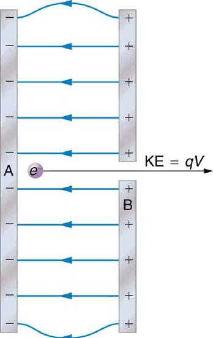
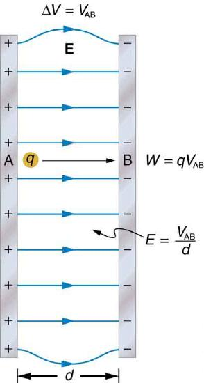
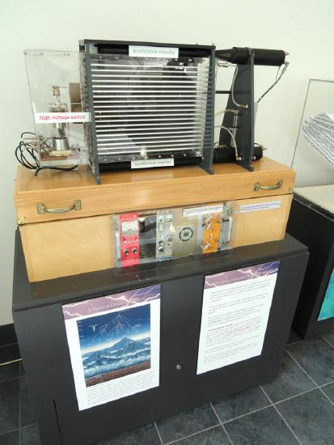
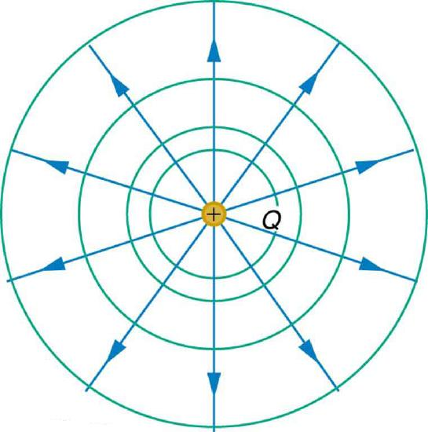
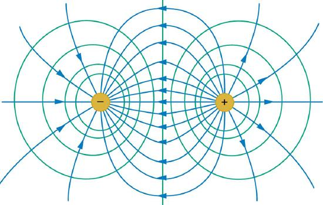
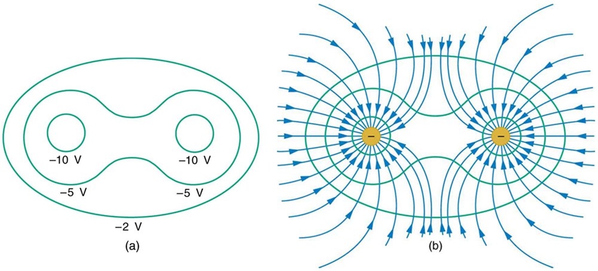
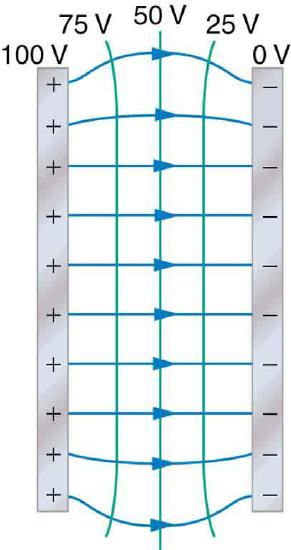

- Define electric potential and electric potential energy.
- Describe the relationship between potential difference and electrical potential energy.
- Explain electron volt and its usage in submicroscopic process.
- Determine electric potential energy given potential difference and amount of charge.
When a free positive charge \(q\) is accelerated by an electric field, such as shown in Figure , it is given kinetic energy. The process is analogous to an object being accelerated by a gravitational field. It is as if the charge is going down an electrical hill where its electric potential energy is converted to kinetic energy. Let us explore the work done on a charge \(q\) by the electric field in this process, so that we may develop a definition of electric potential energy.

The electrostatic or Coulomb force is conservative, which means that the work done on \(q\) is independent of the path taken. This is exactly analogous to the gravitational force in the absence of dissipative forces such as friction. When a force is conservative, it is possible to define a potential energy associated with the force, and it is usually easier to deal with the potential energy (because it depends only on position) than to calculate the work directly.
We use the letters PE to denote electric potential energy, which has units of joules (J). The change in potential energy, \(\Delta \mathrm{PE}\), is crucial, since the work done by a conservative force is the negative of the change in potential energy; that is, \(W=-\Delta \mathrm{PE}\). For example, work \(W\) done to accelerate a positive charge from rest is positive and results from a loss in PE, or a negative \(\Delta \mathrm{PE}\). There must be a minus sign in front of \(\Delta \mathrm{PE}\) to make \(W\) positive. PE can be found at any point by taking one point as a reference and calculating the work needed to move a charge to the other point.
Gravitational potential energy and electric potential energy are quite analogous. Potential energy accounts for work done by a conservative force and gives added insight regarding energy and energy transformation without the necessity of dealing with the force directly. It is much more common, for example, to use the concept of voltage (related to electric potential energy) than to deal with the Coulomb force directly.
Calculating the work directly is generally difficult, since \(W=Fd\cos \theta\) and the direction and magnitude of \(F\) can be complex for multiple charges, for odd-shaped objects, and along arbitrary paths. But we do know that, since \(F=qE\), the work, and hence \(\Delta \mathrm{PE}\), is proportional to the test charge \(q\) To have a physical quantity that is independent of test charge, we defineelectric potential\(V\) (or simply potential, since electric is understood) to be the potential energy per unit charge:
This is the electric potential energy per unit charge.
Since PE is proportional to \(q\), the dependence on \(q\) cancels. Thus \(V\) does not depend on \(q\). The change in potential energy \(\Delta \mathrm{PE}\) is crucial, and so we are concerned with the difference in potential or potential difference \(\Delta V\) between two points, where
Thepotential differencebetween points A and B, \(V_{B}-V_{A}\), is thus defined to be the change in potential energy of a charge \(q\) moved from A to B, divided by the charge. Units of potential difference are joules per coulomb, given the name volt (V) after Alessandro Volta.
The potential difference between points A and B, \(V_{B}-V_{A}\), is defined to be the change in potential energy of a charge \(q\) moved from A to B, divided by the charge. Units of potential difference are joules per coulomb, given the name volt (V) after Alessandro Volta.
The familiar termvoltageis the common name for potential difference. Keep in mind that whenever a voltage is quoted, it is understood to be the potential difference between two points. For example, every battery has two terminals, and its voltage is the potential difference between them. More fundamentally, the point you choose to be zero volts is arbitrary. This is analogous to the fact that gravitational potential energy has an arbitrary zero, such as sea level or perhaps a lecture hall floor.
In summary, the relationship between potential difference (or voltage) and electrical potential energy is given by
POTENTIAL DIFFERENCE AND ELECTRICAL POTENTIAL ENERGY
The relationship between potential difference (or voltage) and electrical potential energy is given by
The second equation is equivalent to the first.
Voltage is not the same as energy. Voltage is the energy per unit charge. Thus a motorcycle battery and a car battery can both have the same voltage (more precisely, the same potential difference between battery terminals), yet one stores much more energy than the other since \(\Delta PE=q\Delta V\). The car battery can move more charge than the motorcycle battery, although both are 12 V batteries.
Suppose you have a 12.0 V motorcycle battery that can move 5000 C of charge, and a 12.0 V car battery that can move 60,000 C of charge. How much energy does each deliver? (Assume that the numerical value of each charge is accurate to three significant figures.)
To say we have a 12.0 V battery means that its terminals have a 12.0 V potential difference. When such a battery moves charge, it puts the charge through a potential difference of 12.0 V, and the charge is given a change in potential energy equal to \(\Delta PE=q\Delta V\).
So to find the energy output, we multiply the charge moved by the potential difference.
For the motorcycle battery, \(q=5000 \mathrm{C}\) and \(\Delta =12.0\mathrm{V}\). The total energy delivered by the motorcycle battery is
Similarly, for the car battery, \(q=60,000\mathrm{C}\) and
While voltage and energy are related, they are not the same thing. The voltages of the batteries are identical, but the energy supplied by each is quite different. Note also that as a battery is discharged, some of its energy is used internally and its terminal voltage drops, such as when headlights dim because of a low car battery. The energy supplied by the battery is still calculated as in this example, but not all of the energy is available for external use.
Note that the energies calculated in the previous example are absolute values. The change in potential energy for the battery is negative, since it loses energy. These batteries, like many electrical systems, actually move negative charge—electrons in particular. The batteries repel electrons from their negative terminals (A) through whatever circuitry is involved and attract them to their positive terminals (B) as shown in Figure . The change in potential is \(\Delta V =V_{B}-V_{A}=+12\mathrm{V}\) and the charge \(q\) is negative, so that \(\Delta \mathrm{PE}=q\Delta V\) is negative, meaning the potential energy of the battery has decreased when \(q\) has moved from A to B.

When a 12.0 V car battery runs a single 30.0 W headlight, how many electrons pass through it each second?
To find the number of electrons, we must first find the charge that moved in 1.00 s. The charge moved is related to voltage and energy through the equation \(\Delta \mathrm{PE}=q\Delta V\). A 30.0 W lamp uses 30.0 joules per second. Since the battery loses energy, we have \(\Delta \mathrm{PE}=-30.0J\) and, since the electrons are going from the negative terminal to the positive, we see that \(\Delta V=+12.0V\).
To find the charge \(q\) moved, we solve the equation \(\Delta \mathrm{PE}=q\Delta V\):
Entering the values for \(\Delta PE\) and \(\Delta V\), we get
The number of electrons \(n_{e}\) is the total charge divided by the charge per electron. That is,
This is a very large number. It is no wonder that we do not ordinarily observe individual electrons with so many being present in ordinary systems. In fact, electricity had been in use for many decades before it was determined that the moving charges in many circumstances were negative. Positive charge moving in the opposite direction of negative charge often produces identical effects; this makes it difficult to determine which is moving or whether both are moving.
The energy per electron is very small in macroscopic situations like that in the previous example—a tiny fraction of a joule. But on a submicroscopic scale, such energy per particle (electron, proton, or ion) can be of great importance. For example, even a tiny fraction of a joule can be great enough for these particles to destroy organic molecules and harm living tissue. The particle may do its damage by direct collision, or it may create harmful x rays, which can also inflict damage. It is useful to have an energy unit related to submicroscopic effects. Figure shows a situation related to the definition of such an energy unit. An electron is accelerated between two charged metal plates as it might be in an old-model television tube or oscilloscope. The electron is given kinetic energy that is later converted to another form—light in the television tube, for example. (Note that downhill for the electron is uphill for a positive charge.) Since energy is related to voltage by \(\Delta PE=q\Delta V\) we can think of the joule as a coulomb-volt.

On the submicroscopic scale, it is more convenient to define an energy unit called theelectron volt(eV), which is the energy given to a fundamental charge accelerated through a potential difference of 1 V. In equation form,
On the submicroscopic scale, it is more convenient to define an energy unit called the electron volt (eV), which is the energy given to a fundamental charge accelerated through a potential difference of 1 V.In equation form,
An electron accelerated through a potential difference of 1 V is given an energy of 1 eV. It follows that an electron accelerated through 50 V is given 50 eV. A potential difference of 100,000 V (100 kV) will give an electron an energy of 100,000 eV (100 keV), and so on. Similarly, an ion with a double positive charge accelerated through 100 V will be given 200 eV of energy. These simple relationships between accelerating voltage and particle charges make the electron volt a simple and convenient energy unit in such circumstances.
CONNECTIONS: ENERGY UNITS
The electron volt (eV) is the most common energy unit for submicroscopic processes. This will be particularly noticeable in the chapters on modern physics. Energy is so important to so many subjects that there is a tendency to define a special energy unit for each major topic. There are, for example, calories for food energy, kilowatt-hours for electrical energy, and therms for natural gas energy.
The electron volt is commonly employed in submicroscopic processes—chemical valence energies and molecular and nuclear binding energies are among the quantities often expressed in electron volts. For example, about 5 eV of energy is required to break up certain organic molecules. If a proton is accelerated from rest through a potential difference of 30 kV, it is given an energy of 30 keV (30,000 eV) and it can break up as many as 6000 of these molecules ( \(30,000 \mathrm{eV}\div 5\mathrm{eV}\) per molecule \(=6000\) molecules). Nuclear decay energies are on the order of 1 MeV (1,000,000 eV) per event and can, thus, produce significant biological damage.
The total energy of a system is conserved if there is no net addition (or subtraction) of work or heat transfer. For conservative forces, such as the electrostatic force, conservation of energy states that mechanical energy is a constant.
Mechanical energyis the sum of the kinetic energy and potential energy of a system; that is, \(KE + PE=\: \mathrm{constant}\). A loss of PE of a charged particle becomes an increase in its KE. Here PE is the electric potential energy. Conservation of energy is stated in equation form as
where i and f stand for initial and final conditions. As we have found many times before, considering energy can give us insights and facilitate problem solving.
Calculate the final speed of a free electron accelerated from rest through a potential difference of 100 V. (Assume that this numerical value is accurate to three significant figures.)
We have a system with only conservative forces. Assuming the electron is accelerated in a vacuum, and neglecting the gravitational force (we will check on this assumption later), all of the electrical potential energy is converted into kinetic energy. We can identify the initial and final forms of energy to be \(\mathrm{KE}_{i}=0,\mathrm{KE}_{f}=\dfrac{1}{2}mv^{2}, \mathrm{PE}_{i}=qV,\: \mathrm{and}\: \mathrm{PE}_{f}=0\).
Conservation of energy states that
Entering the forms identified above, we obtain
We solve this for \(v\):
Entering values for \(q,\: V,\: \mathrm{and}\: m\) gives
Note that both the charge and the initial voltage are negative, as inFigure. From the discussions inElectric Charge and Electric Field, we know that electrostatic forces on small particles are generally very large compared with the gravitational force. The large final speed confirms that the gravitational force is indeed negligible here. The large speed also indicates how easy it is to accelerate electrons with small voltages because of their very small mass. Voltages much higher than the 100 V in this problem are typically used in electron guns. Those higher voltages produce electron speeds so great that relativistic effects must be taken into account. That is why a low voltage is considered (accurately) in this example.
📖 OpenStax College Physics, Section 19.01. openstax.org · CC BY 4.0
- Describe the relationship between voltage and electric field.
- Derive an expression for the electric potential and electric field.
- Calculate electric field strength given distance and voltage.
In the previous section, we explored the relationship between voltage and energy. In this section, we will explore the relationship between voltage and electric field. For example, a uniform electric field \(\mathbf{E}\) is produced by placing a potential difference (or voltage) \(\Delta V\) across two parallel metal plates, labeled A and B. (Figure Examining this will tell us what voltage is needed to produce a certain electric field strength; it will also reveal a more fundamental relationship between electric potential and electric field. From a physicist’s point of view, either \(\Delta V\) or \(\mathbf{E}\) can be used to describe any charge distribution. \(\Delta V\) is most closely tied to energy, whereas \(\mathbf{E}\) is most closely related to force. \(\Delta V\)is ascalarquantity and has no direction, while \(\mathbf{E}\) is avectorquantity, having both magnitude and direction. (Note that the magnitude of the electric field strength, a scalar quantity, is represented by \(E\) below.) The relationship between \(\Delta V\) and \(\mathbf{E}\) is revealed by calculating the work done by the force in moving a charge from point A to point B. But, as noted inElectric Potential Energy: Potential Difference, this is complex for arbitrary charge distributions, requiring calculus. We therefore look at a uniform electric field as an interesting special case.

The work done by the electric field in Figure to move a positive charge \(q\) from A, the positive plate, higher potential, to B, the negative plate, lower potential, is
The potential difference between points A and B is
Entering this into the expression for work yields
Work is \(W=Fd \cos \theta\); here \(\cos \theta =1\), since the path is parallel to the field, and so \(W=Fd\). Since \(F=qE\), we see that \(W=qEd\). Substituting this expression for work into the previous equation gives
The charge cancels, and so the voltage between points A and B is seen to be
where \(d\) is the distance from A to B, or the distance between the plates in Figure . Note that the above equation implies the units for electric field are volts per meter. We already know the units for electric field are newtons per coulomb; thus the following relation among units is valid:
VOLTAGE BETWEEN POINTS A AND B
where \(d\) is the distance from A to B, or the distance between the plates.
Dry air will support a maximum electric field strength of about \(3.0 \times 10^{6} \mathrm{V/m}\). Above that value, the field creates enough ionization in the air to make the air a conductor. This allows a discharge or spark that reduces the field. What, then, is the maximum voltage between two parallel conducting plates separated by 2.5 cm of dry air?
We are given the maximum electric field \(E\) between the plates and the distance \(d\) between them. The equation \(V_{\mathrm{AB}}=Ed\) can thus be used to calculate the maximum voltage.
The potential difference or voltage between the plates is
Entering the given values for \(E\) and \(d\) gives
(The answer is quoted to only two digits, since the maximum field strength is approximate.)
One of the implications of this result is that it takes about 75 kV to make a spark jump across a 2.5 cm (1 in.) gap, or 150 kV for a 5 cm spark. This limits the voltages that can exist between conductors, perhaps on a power transmission line. A smaller voltage will cause a spark if there are points on the surface, since points create greater fields than smooth surfaces. Humid air breaks down at a lower field strength, meaning that a smaller voltage will make a spark jump through humid air. The largest voltages can be built up, say with static electricity, on dry days.

Since the voltage and plate separation are given, the electric field strength can be calculated directly from the expression \(E=\dfrac{V_{\mathrm{AB}}}{d}\). Once the electric field strength is known, the force on a charge is found using \(\mathbf{F}=q\mathbf{E}\). Since the electric field is in only one direction, we can write this equation in terms of the magnitudes, \(F=qE\).
The expression for the magnitude of the electric field between two uniform metal plates is
Since the electron is a single charge and is given 25.0 keV of energy, the potential difference must be 25.0 kV. Entering this value for \(V_{\mathrm{AB}}\) and the plate separation of 0.0400 m, we obtain
The magnitude of the force on a charge in an electric field is obtained from the equation
Substituting known values gives
Note that the units are newtons, since \(1 \mathrm{V/m}=1\mathrm{N/C}\). The force on the charge is the same no matter where the charge is located between the plates. This is because the electric field is uniform between the plates.
In more general situations, regardless of whether the electric field is uniform, it points in the direction of decreasing potential, because the force on a positive charge is in the direction of \(\mathbf{E}\) and also in the direction of lower potential \(V\). Furthermore, the magnitude of \(\mathbf{E}\) equals the rate of decrease of \(V\) with distance. The faster \(V\) decreases over distance, the greater the electric field. In equation form, the general relationship between voltage and electric field is
where \(\Delta s\) is the distance over which the change in potential, \(\Delta V\), takes place. The minus sign tells us that \(\mathbf{E}\) points in the direction of decreasing potential. The electric field is said to be thegradient(as in grade or slope) of the electric potential.
RELATIONSHIP BETWEEN VOLTAGE AND ELECTRIC FIELD
In equation form, the general relationship between voltage and electric field is
where \(\Delta s\) is the distance over which the change in potential, \(\Delta V\), takes place. The minus sign tells us that \(\mathbf{E}\) points in the direction of decreasing potential. The electric field is said to be thegradient(as in grade or slope) of the electric potential.
For continually changing potentials, \(\Delta V\) and \(\Delta s\) become infinitesimals and differential calculus must be employed to determine the electric field.
📖 OpenStax College Physics, Section 19.02. openstax.org · CC BY 4.0
- Explain point charges and express the equation for electric potential of a point charge.
- Distinguish between electric potential and electric field.
- Determine the electric potential of a point charge given charge and distance.
Point charges, such as electrons, are among the fundamental building blocks of matter. Furthermore, spherical charge distributions (like on a metal sphere) create external electric fields exactly like a point charge. The electric potential due to a point charge is, thus, a case we need to consider. Using calculus to find the work needed to move a test charge \(q\) from a large distance away to a distance of \(r\) from a point charge \(Q\), and noting the connection between work and potential \((W=-q\Delta V)\), we can define theelectric potential \(V\)of a point charge:
definition: ELECTRIC POTENTIAL \(V\) OF A POINT CHARGE
The electric potential \(V\) of a point charge is given by
where \(k\) is a constant equal to \(9.0 \times 10^{9}\, \mathrm{N}\cdot \mathrm{m^{2}/C^{2}}.\)
The potential at infinity is chosen to be zero. Thus \(V\) for a point charge decreases with distance, whereas \(\mathbf{E}\) for a point charge decreases with distance squared:
Recall that the electric potential \(V\) is a scalar and has no direction, whereas the electric field \(\mathbf{E}\) is a vector. To find the voltage due to a combination of point charges, you add the individual voltages as numbers. To find the total electric field, you must add the individual fields asvectors, taking magnitude and direction into account. This is consistent with the fact that \(V\) is closely associated with energy, a scalar, whereas \(\mathbf{E}\) is closely associated with force, a vector.
Charges in static electricity are typically in the nanocoulomb \((\mathrm{nC})\) to microcoulomb \((\mu \mathrm{C})\) range. What is the voltage 5.00 cm away from the center of a 1-cm diameter metal sphere that has a \(-3.00 \mathrm{nC}\) static charge?
As we have discussed inElectric Charge and Electric Field, charge on a metal sphere spreads out uniformly and produces a field like that of a point charge located at its center. Thus we can find the voltage using Equation \ref{eq1}.
Entering known values into the expression for the potential of a point charge, we obtain
The negative value for voltage means a positive charge would be attracted from a larger distance, since the potential is lower (more negative) than at larger distances. Conversely, a negative charge would be repelled, as expected.
A demonstration Van de Graaff generator has a 25.0 cm diameter metal sphere that produces a voltage of 100 kV near its surface. (Figure What excess charge resides on the sphere? (Assume that each numerical value here is shown with three significant figures.)
![The figure shows a Van de Graaff generator. The generator consists of a flat belt running over two metal pulleys. One pulley is positioned at the top and another at the bottom. The upper pulley is surrounded by an aluminum sphere. The aluminum sphere has a diameter of twenty five centimeters. Inside the sphere, the upper pulley is connected to a conductor which in turn is connected to a voltmeter for measuring the potential on the sphere. The lower pulley is connected to a motor. When the motor is switched on, the lower pulley begins turning the flat belt. The Van de Graaff generator with the above described setup produces a voltage of one hundred kilovolts. The potential on the surface of the sphere will be the same as that of a point charge at the center which is twelve point five centimeters away from the center. Thus the excess charge is calculated using the formula Q equals r times V divided by k.](images/ch19/fig19-7-the-figure-shows-a-van-de-graaff-generat.png)
The potential on the surface will be the same as that of a point charge at the center of the sphere, 12.5 cm away. (The radius of the sphere is 12.5 cm.) We can thus determine the excess charge using Equation \ref{eq1}.
Solving for \(Q\) and entering known values gives
This is a relatively small charge, but it produces a rather large voltage. We have another indication here that it is difficult to store isolated charges.
The voltages in both of these examples could be measured with a meter that compares the measured potential with ground potential. Ground potential is often taken to be zero (instead of taking the potential at infinity to be zero). It is the potential difference between two points that is of importance, and very often there is a tacit assumption that some reference point, such as Earth or a very distant point, is at zero potential. This is analogous to taking sea level as \(h=0\) when considering gravitational potential energy, \(\mathrm{PE_{g}}=mgh\).
📖 OpenStax College Physics, Section 19.03. openstax.org · CC BY 4.0
- Explain equipotential lines and equipotential surfaces.
- Describe the action of grounding an electrical appliance.
- Compare electric field and equipotential lines.
We can represent electric potentials (voltages) pictorially, just as we drew pictures to illustrate electric fields. Of course, the two are related. Consider Figure , which shows an isolated positive point charge and its electric field lines. Electric field lines radiate out from a positive charge and terminate on negative charges. While we use blue arrows to represent the magnitude and direction of the electric field, we use green lines to represent places where the electric potential is constant. These are calledequipotential linesin two dimensions, orequipotential surfacesin three dimensions. The termequipotentialis also used as a noun, referring to an equipotential line or surface. The potential for a point charge is the same anywhere on an imaginary sphere of radius \(r\) surrounding the charge. This is true since the potential for a point charge is given by \(V=kQ/r\) and, thus, has the same value at any point that is a given distance \(r\) from the charge. An equipotential sphere is a circle in the two-dimensional view of Figure . Since the electric field lines point radially away from the charge, they are perpendicular to the equipotential lines.

It is important to note thatequipotential lines are always perpendicular to electric field lines.No work is required to move a charge along an equipotential, since \(\Delta V=0\). Thus the work is
Work is zero if force is perpendicular to motion. Force is in the same direction as \(\mathbf{E}\), so that motion along an equipotential must be perpendicular to \(\mathbf{E}\). More precisely, work is related to the electric field by
Note that in the above equation, \(E\) and \(F\) symbolize the magnitudes of the electric field strength and force, respectively. Neither \(q\) nor \(\mathbf{E}\) nor \(d\) is zero, and so \(\cos \theta\) must be 0, meaning \(\theta\) must be \(90^{\cdot}\). In other words, motion along an equipotential is perpendicular to \(\mathbf{E}\).
One of the rules for static electric fields and conductors is that the electric field must be perpendicular to the surface of any conductor. This implies that aconductor is an equipotential surface in static situations.There can be no voltage difference across the surface of a conductor, or charges will flow. One of the uses of this fact is that a conductor can be fixed at zero volts by connecting it to the earth with a good conductor—a process calledgrounding. Grounding can be a useful safety tool. For example, grounding the metal case of an electrical appliance ensures that it is at zero volts relative to the earth.
A conductor can be fixed at zero volts by connecting it to the earth with a good conductor—a process called grounding.
Because a conductor is an equipotential, it can replace any equipotential surface. For example, in Figure a charged spherical conductor can replace the point charge, and the electric field and potential surfaces outside of it will be unchanged, confirming the contention that a spherical charge distribution is equivalent to a point charge at its center.

Figure shows the electric field and equipotential lines for two equal and opposite charges. Given the electric field lines, the equipotential lines can be drawn simply by making them perpendicular to the electric field lines. Conversely, given the equipotential lines, as in Figure \(\PageIndex{3a}\), the electric field lines can be drawn by making them perpendicular to the equipotentials, as in Figure \(\PageIndex{3b}\).

One of the most important cases is that of the familiar parallel conducting plates shown in Figure . Between the plates, the equipotentials are evenly spaced and parallel. The same field could be maintained by placing conducting plates at the equipotential lines at the potentials shown.

An important application of electric fields and equipotential lines involves the heart. The heart relies on electrical signals to maintain its rhythm. The movement of electrical signals causes the chambers of the heart to contract and relax. When a person has a heart attack, the movement of these electrical signals may be disturbed. An artificial pacemaker and a defibrillator can be used to initiate the rhythm of electrical signals. The equipotential lines around the heart, the thoracic region, and the axis of the heart are useful ways of monitoring the structure and functions of the heart. An electrocardiogram (ECG) measures the small electric signals being generated during the activity of the heart. More about the relationship between electric fields and the heart is discussed inEnergy Stored in Capacitors.
PHET EXPLORATIONS: CHARGES AND FIELDS
Move point charges around on the playing field and then view the electric field, voltages, equipotential lines, and more.
📖 OpenStax College Physics, Section 19.04. openstax.org · CC BY 4.0
| Section | Title |
|---|---|
| 19.01 | 19.1: Electric Potential Energy- Potential Difference |
| 19.02 | 19.2: Electric Potential in a Uniform Electric Field |
| 19.03 | 19.3: Electrical Potential Due to a Point Charge |
| 19.04 | 19.4: Equipotential Lines |